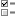
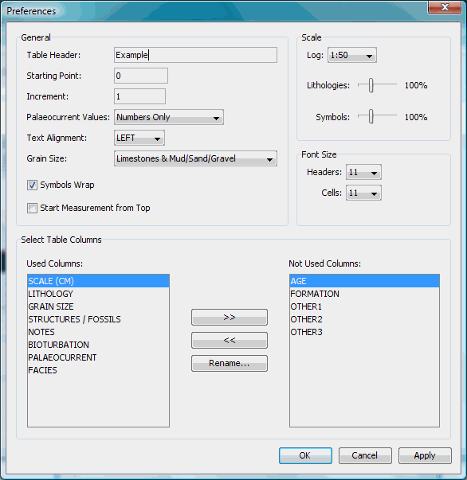

Customise
the graphic log
To change the column width,
position
the mouse pointer on the edge of the column you want to resize. The
mouse pointer will change to a two way arrow. Hold down the left mouse
key and drag the mouse to resize the column.
Using the preferences window (see
figure bellow) the user can change
the
layout and format of the log table to suit particular needs.
The preferences window
can be invoked by selecting Preferences
in the Tools menu;
alternatively click Preferences 
on the toolbar. Alternative
layouts can be used, using all or some of these columns, or
using some of the following additional columns.
(a) Bioturbation: this column may be used to display symbols for
different types of ichnofauna plus a value to indicate the intensity of
the bioturbation.
(b) Facies: a useful way of the showing the facies is to use a narrow
column for each facies and filling in the column adjacent to the
appropriate beds. This format of representing facies information can
provide a quick, visual impression of the distribution of facies within
a succession, and if the order of the columns is arranged
appropriately, for example with the shallowest representation of
depositional environment on the left and the deepest on the right, then
shallowing or deepening trends can be recognised.
(c) Palaeocurrent data is recorded bed-by-bed with multiple entries for
a single bed possible: SedLog stores the data numerically, but it can
be displayed on the graphic log either as numbers of as arrows with
appropriate orientations.
(d) Columns for stratigraphic information: 'Age' and 'Formation'
columns are intended to be placed on the left side of the log, with
boundaries between stratigraphic units entered at the appropriate bed
and names displayed with text aligned vertically.
(e) Three further user-defined columns are available for entering
either text or numerical data. These may be used to record features
such as colour, the positions of samples or photographs or data that
result from geochemical or other analyses.
Any of the columns can be renamed via a layout window (see figure
bellow) and this window can also be used to modify a number of other
aspects of the appearance of the graphic log. Several different scales
are available, from 1:10 to 1:1000; there are also options on the
intervals for display of the numbers on the scale and the scale can
either measure form bottom to top for outcrop or downward for depth in
borehole core. The size of the symbols, the magnification of the
lithology patterns and the font sizes can be adjusted to suit different
log scales. The order of the positions of the columns from left to
right can be changed as required, and the name of the column
customised. The default title at the top of the grain size scale is a
dual clastic and carbonate scale, but either can be used on its own.
The title of the log is also inserted via this window. An important
consideration in the design of SedLog has been the desire to allow the
user as much flexibility as possible in the appearance of the output,
although there are some limitations: for example, the total number of
columns available is fixed and symbols can only be inserted into some
columns. The width of columns can be modified on-screen by
click-and-drag of the column boundaries. Once a layout has been created
it can be saved as a template for multiple data sets.
See Also
Templates
